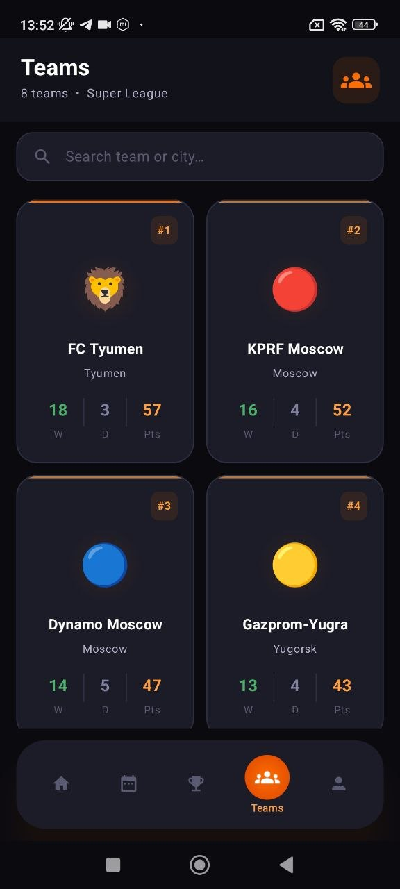
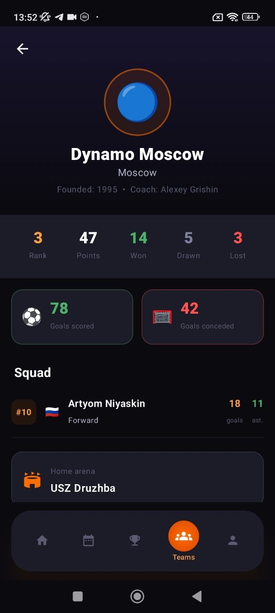
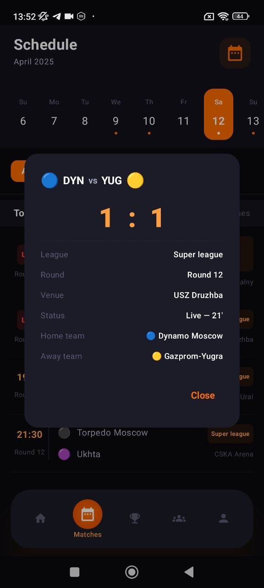
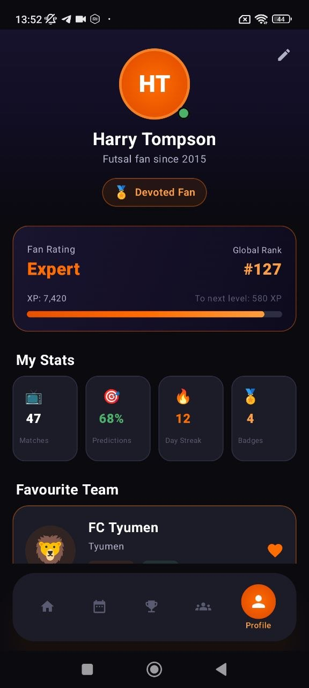

Live news feed
Recent headlines, match updates, player stories, transfer notes, and league changes presented in premium dark cards.
Follow the title race, explore teams, track schedules, view live match momentum, and keep your own fan profile in one polished futsal experience built to feel like a real top-tier sports startup product.



The site is built around the same filling that worked well before: strong first screen, product explanation, premium cards, animated showcase, league structure, and a proper privacy section.
Recent headlines, match updates, player stories, transfer notes, and league changes presented in premium dark cards.
Club pages, points, wins, draws, losses, city details, squad info, and arena references designed like a real sports hub.
Table views, recent form markers, rank states, and clean modal style data presentation for season context.
Personal profile, XP, badge level, prediction stats, favourite club support, and a premium gamified feel.
The product doesn’t stop at pretty screens. It communicates the league story clearly: rank, form, playoff pressure, relegation danger, and club momentum.

A good sports app must make clubs feel alive. Here the UI shows city, points, record, visual identity, and favourite team emotional connection in a clean premium system.
From favourite team loyalty to prediction stats and personal rank, the app creates a stronger sense of ownership and daily return.
XP progression, level-up pacing, badges, day streak, match participation, and a visible sense of status for engaged fans.
Important matches stay sharp with score contrast, league tags, venue info, and filter-ready presentation.
Live scores, standings, club pages, personal profile tools, and a polished fan-first interface in one strong mobile experience.